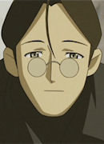

- Fairy Tail
- Fairy Tail (2014)
- Kino's Journey

- Pokemon
- Pokemon: Raikou - The Legend of Thunder

- Children Who Chase Lost Voices

- Romeo x Juliet
| |
Gildarts Clive |
|
|
|  | Kino (Orignal) |
|
Kino is a travler who meets the main character when is 11 year old. He known hoe to repair machinery. |
| |
Professor Elm |
|
|
| |
Ryuuji Morisaki |
|
|
| |
William |
|